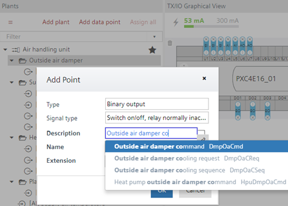
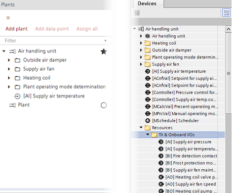

对象命名
Text database
ABT 站点包含一个文本数据库，其中包含数据点和文件夹（应用程序功能）的预定义文本。这使您能够为工厂对象指定正确的名称和描述。点测试人员通过名称知道他们测试的数据点类型。在工厂视图中添加文件夹或数据点时，系统会向您提供名称和匹配的描述，供您从文本数据库中进行选择。
Updating text databases of devices

默认情况下，文本数据库中可用名称、描述和标签的数量会减少，以便提供上下文特定的选择。例如，当选择输出时，仅提供与输出相关的名称和描述。为了在文本选择器中显示所有名称、描述和标签，请打开Settings > Naming defaults > Naming rules tab，然后选择Show all names and tags.
Plant automation tab
Custom state texts
除了预定义文本之外，您还可以创建自己的自定义状态文本。自定义状态文本存储在项目数据库中，并且可以在控制器或项目中多次重复使用。
Creating custom state texts
Naming structures
命名结构在每个工厂的工厂视图中进行管理。创建的文件夹支持在工厂内构建数据点，也可用于Programming、ABT Go、Desigo CC 和 Desigo Control Point（操作和监控设备）。这Graphics领域中的Add folder对话框为 Desigo CC 和 Desigo Control Point（操作和监控设备）提供附加语义信息。该信息用于标记 Desigo 控制点图形、Desigo CC 图形和未来的 ABT 图形。
您可以设置整个结构，例如由加热盘管、外部空气风门等组成的空气处理装置。您可以将数据点添加到文件夹，将数据点从文件夹移动到另一个文件夹，或者将对象从库拖放到工厂视图中。文件夹内的数据点按对象类型的字母顺序排序。
所有对象（数据点、值对象、调度程序等）的默认分层对象命名基于定义的文件夹结构。
命名结构相同I/O configuration, Modbus和Programming.
I/O configuration
Modbus
Programming
Programming
在Programming编辑器 TX 和 Onboard I/Os 列在Resources文件夹。您可以在树中进行多项选择并将它们从一个文件夹移动到另一个文件夹。您还可以在Programming编辑器并将它们拖到文件夹结构中。
